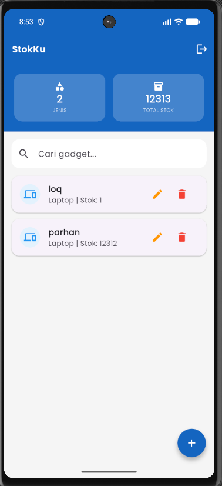

01 StokKu
StokKu membantu admin tempat penyimpanan mencatat dan melihat stok laptop, HP, dan TV. Admin juga dapat mengedit data gadget.
- Kategori
- Mobile
- Teknologi
- Flutter, Dart
- Status
- Selesai


Di sini saya mengumpulkan tiga aplikasi mobile, satu desain aplikasi, dan satu proyek konsep. Pilih kategori untuk melihat proyek yang sesuai.
StokKu membantu admin tempat penyimpanan mencatat dan melihat stok laptop, HP, dan TV. Admin juga dapat mengedit data gadget.
